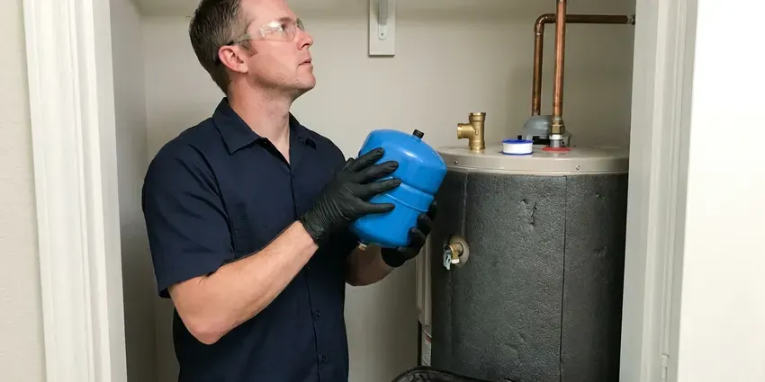

Electric Tankless Water Heater Installation in St. Albans, WV
Want endless hot water without a gas line in St. Albans, WV? We install electric tankless units that need no venting and fit in tight spaces.
- Quick, Reliable Installation
- Licensed and Insured Plumbers
- Code Compliant
- No Venting Required

Need Electric Tankless Water Heater Installation in St. Albans, WV?
Experience the difference with our skilled technicians and modern solutions.
Reliable Electric Tankless Water Heater Installation for St. Albans, WV Homes
For homeowners in St. Albans, WV, GJK Plumbing provides complete electric tankless water heater installation services. We handle everything from electrical panel upgrades to proper sizing, making sure your new unit delivers consistent hot water efficiently and reliably.
Our expertise includes:
- Careful sizing and placement of tankless units.
- Accurate Electrical Load Assessment
- Accurate electrical load assessment for your home.

Additional Plumbing Installation Services in St. Albans, WV
We install water heaters, pumps, lines, and fixtures across St. Albans, WV with precision workmanship that meets every local code.


Customers
Why Choose GJK Plumbing for Electric Tankless Water Heater Installation in St. Albans, WV?
This efficiency can lead to lower utility bills and a smaller environmental footprint, making them a smart choice for many St. Albans properties.
- Accurate Sizing, We size units by flow rate, temperature rise and household demand.
- Energy Savings, Heat water only when you need it, cutting down on wasted energy and utility costs.
- Space Saving, These compact units mount on a wall, freeing up useful floor space in your garage or utility closet.
Citywide Coverage
From all-electric homes to additions and guest suites, we serve every part of St. Albans. We plan installs that keep connections easy to reach for future service.
Experienced Team
Our team of plumbers has broad experience with electric tankless water heater installation, including the electrical demands and water conditions found in West Virginia. We stay updated on the latest technology and installation best practices. You can trust our technicians to perform the job right the first time.
Safety-First Approach
GJK Plumbing adheres strictly to all local St. Albans, WV plumbing and electrical codes during installation, including proper wiring, overcurrent protection and water pressure regulation. Your family's safety and the long-term reliability of your system are our top priorities.
Trusted Certified St. Albans Plumbing Services Professionals
At GJK Plumbing, we take pride in providing certified plumbing services throughout St. Albans, WV. Backed by leading industry credentials, our experienced plumbers combine technical skill with genuine customer care. Whether it is repair, installation, or maintenance, we follow strict safety and quality standards to deliver lasting results you can trust.
Call Us Now PHCC Plumbing Contractor Recognition
PHCC Plumbing Contractor Recognition Better Business Bureau (BBB) Accreditation
Better Business Bureau (BBB) Accreditation Angi Certified Pro
Angi Certified Pro ISO 9001 Quality Management Certification
ISO 9001 Quality Management CertificationDependable Electric Tankless Water Heater Installation Services in St. Albans, WV
Commercial Electric Tankless Water Heater Solutions in St. Albans, WV
Businesses in St. Albans, WV can benefit greatly from the space-saving and energy-efficient nature of electric tankless water heaters. We install heavy-duty commercial-grade units designed to meet the higher demands of restaurants, salons, offices and other establishments. Our plumbers ensure disruption to your operations minimal during installation, providing reliable hot water for your business needs.

Electric Tankless Water Heater Sizing and Selection in St. Albans
Choosing the right electric tankless water heater size is essential for performance. In St. Albans, factors like groundwater temperature and your household's simultaneous hot water usage determine the ideal GPM (gallons per minute) output required. GJK Plumbing provides careful consultation to help you select a unit that perfectly matches your demand, preventing cold showers and ensuring efficiency. We consider your home's plumbing layout and electrical panel capacity to recommend the best model.
Rheem Electric Tankless Water Heater Services in St. Albans
Rheem is another trusted name in electric tankless water heaters, offering a range of models suitable for different home sizes and budgets in St. Albans. Our team has broad experience with Rheem installations, ensuring proper electrical connections, water flow and system calibration. We help you choose the right Rheem model that aligns with your hot water demands and energy efficiency goals.
Electrical Panel Review and Upgrades in St. Albans
Electric tankless water heaters can require a large amount of amperage depending on size. We review your panel capacity before installation. If your panel cannot support the unit, we coordinate with a licensed electrician for an upgrade. Proper wiring prevents tripped breakers and overheating. Planning ahead avoids costly surprises.
Residential Electric Tankless Heater Installation in St. Albans
For homeowners in St. Albans, we provide tailored electric tankless water heater installation services. We assess your household's hot water demand, existing electrical capacity and main water line size to recommend the right unit. Our team handles everything from permit acquisition to final testing, making for a hassle-free upgrade to endless hot water. Damp basements and crawlspaces are common in St. Albans and around the state, which can speed up corrosion on pipes and fittings.
Electric Tankless Installation Cost in St. Albans, WV
Point-of-use electric tankless units usually cost much less than whole-home systems. Whole-home installs may require multiple circuits and sometimes a panel upgrade, which adds cost. We provide a written quote that includes the unit, plumbing and coordination with electrical work. We also compare operating costs with tank water heaters. That helps you decide if tankless is the right fit.
Residential Electric Tankless Water Heater Installation in St. Albans
For homeowners in St. Albans, an electric tankless water heater means a continuous supply of hot water for bathing, washing dishes and laundry. We help you choose the right size unit based on your household's peak hot water demand, so you never run cold. Our service includes a full assessment of your current electrical panel capacity, as these units require dedicated high-amperage circuits. We work with leading brands like Rheem, Ecosmart and Stiebel Eltron to provide reliable solutions matched to your home's needs.

Emergency Electric Tankless Water Heater Replacement in St. Albans, WV
If your old water heater unexpectedly fails and you need a fast replacement, GJK Plumbing offers emergency electric tankless water heater installation services in St. Albans, WV. We understand the urgency of restoring hot water to your home or business. Our team can promptly assess your needs, recommend a good electric tankless unit and perform the installation with little disruption. We focus on rapid response to get your hot water flowing again.
Electric Tankless Water Heater Installation Near Me in St. Albans, WV
If you're searching for 'electric tankless water heater installation near me' in St. Albans, WV, look no further than GJK Plumbing. Our local plumbers are familiar with the area's water conditions and building standards, ensuring a custom and effective installation. We're dedicated to providing prompt and reliable service to our community.
Our plumbers understand local water conditions and electrical requirements. We coordinate with electricians so your installation goes smoothly. You get endless hot water with a clean, professional install.
GJK Plumbing at a Glance
- Licensed and insured plumbers serving St. Albans, WV
- 24/7 emergency service with same-day scheduling
- Upfront, flat-rate pricing before work begins
- 4.8-star rated by 832+ West Virginia customers
St. Albans Map
St. Albans Information
- Population
- 10,387
- Area codes
- Local
- Service area
- St. Albans and communities within 40 miles
- Nearby
- Nitro, Dunbar, Cross Lanes, South Charleston
Electric tankless water heater installation is a practical choice for St. Albans, WV homes, offering energy efficiency and continuous hot water. Damp basements and crawlspaces are common in St. Albans and around the state, which can speed up corrosion on pipes and fittings.
Expert Services
Trust our professionals for reliable GJK Plumbing solutions in St. Albans, WV.
Our Specialized Plumbing Services in St. Albans, WV
At GJK Plumbing, we provide a complete range of plumbing services across St. Albans, WV. From leak detection to full system installations, our team ensures fast, precise, and affordable service for both residential and commercial properties. Explore our core services below:


How Our Electric Tankless Water Heater Installation Process Works in St. Albans, WV
Here is how we install your electric tankless water heater step by step.
Request a Quote
Contact us at (681) 223-3607 to schedule a consultation. We'll discuss your hot water needs and assess your home's electrical and plumbing systems.
Site Assessment
Our plumber will visit your St. Albans home to confirm electrical capacity, water pressure and determine the best location for your new unit. We'll recommend the right electric tankless model for your household.
Professional Installation
We handle the entire installation, including any needed electrical upgrades, plumbing connections and testing. Our team makes sure your new unit is working properly and adheres to all local codes.
Frequently Asked Questions About Electric Tankless Water Heater Installation in St. Albans
Point-of-use units usually cost $500 to $1,500 installed. Whole-home electric tankless installations often run $1,500 to $4,500, and panel upgrades can add $2,000 to $4,000.
Fluctuating water temperature, error codes and reduced flow are common signs. Hard water scale is a common cause.
Testing well water every year or so is a smart habit in West Virginia, especially after flooding or nearby ground disturbance. Hard water can lead to mineral buildup (scale) inside electric tankless water heaters, which can reduce efficiency and lifespan. Regular flushing and descaling, often recommended once a year, are key maintenance steps to keep your unit running well.
With proper installation and regular maintenance, an electric tankless water heater can last 20 years or more, which is much longer than the 10 to 15 year lifespan of a traditional tank unit. Their modular design also means components can often be replaced, extending their service life further.
Yes, when they are sized for your incoming water temperature. Damp basements and crawlspaces are common in St. Albans and around the state, which can accelerate corrosion on pipes and fittings. Sizing matters most in cooler months and higher elevation areas.
GJK Plumbing stands behind our work with a full labor warranty on all electric tankless water heater installations. Additionally, the units themselves come with manufacturer warranties, typically ranging from 5 to 10 years on the heat exchanger. We'll provide full details for your specific unit.
Most standard electric tankless water heater installations take between 4 and 8 hours. However, if major electrical panel upgrades or extensive plumbing modifications are required, the process could extend to a full day. We always aim for efficiency without sacrificing quality.
Water hardness varies from place to place. Testing well water every year or so is a good habit in West Virginia, especially after flooding or nearby ground disturbance. Like any water heater, electric tankless units benefit from regular flushing to prevent mineral buildup, especially if your St. Albans area has harder water. We can advise on maintenance and offer water softening solutions if needed.
What People Are Saying About Our Plumbing Experts?

Emily R.
I called GJK Plumbing for plumbing repair, and the technician was fast, polite, and thorough. They explained the problem clearly and fixed it the same day. I will definitely hire them again. Highly recommended!
Plumbing Repair · Dunbar, WV
Patricia H.
We had a slab leak that two other companies could not find. GJK Plumbing located it in under an hour, explained our options, and the price matched the quote to the dollar.
Slab Leak Repair · Cross Lanes, WV
Laura S.
I scheduled a water heater replacement, and the team made the process smooth and affordable. The new unit works perfectly, and they cleaned up after completing the job.
Water Heater Replacement · Charleston, WV
Daniel K.
A pipe burst at 11 pm and they actually answered. The plumber showed up within the hour, shut everything down, and had us back to normal the next morning. Could not ask for more.
Emergency Plumbing · St. Albans, WV
Mark T.
When our office needed drain cleaning, GJK Plumbing provided quick, reliable service. The plumber arrived on time and made sure every drain flowed perfectly before leaving. Very satisfied.
Drain Cleaning · South Charleston, WVSofia M.
Two new toilets installed in one visit, no mess left behind, and the tech even adjusted a faucet he noticed was dripping. Fair pricing and really friendly.
Toilet Installation · Dunbar, WV